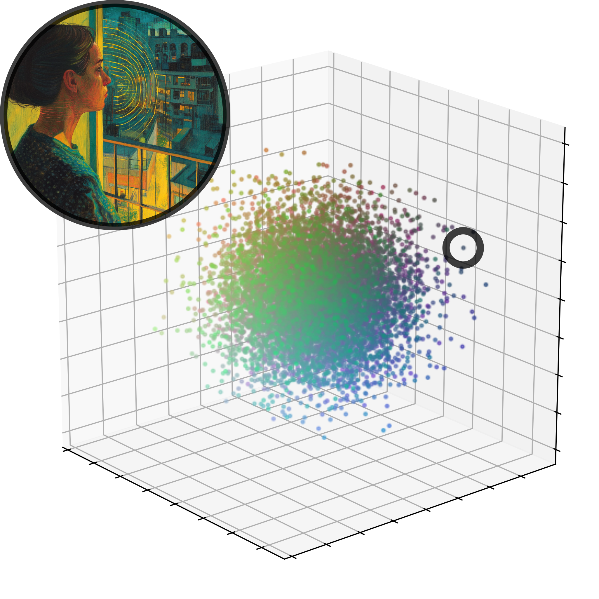
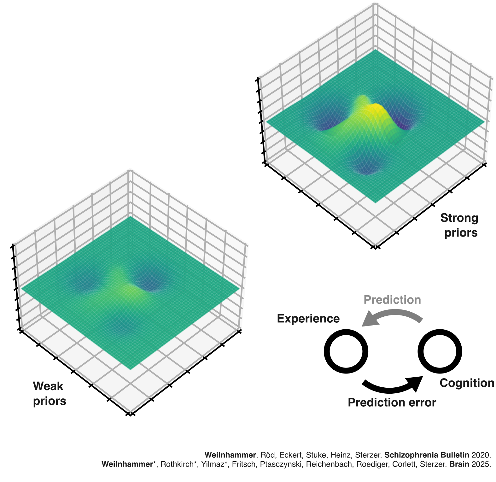

The geometry of mental health
Veith Weilnhammer, MD
Max Planck UCL Centre for Computational Psychiatry and Ageing Research
UCL-DRCMR Symposium | 30.10.2025

It started with strange noises through the wall, quiet and barely recognizable, as if someone were eavesdropping.
Over time, I could make out the voice of my neighbor. I had to investigate.
At first, I only heard his voice in my apartment, but later he followed me to other places.
Then it dawned on me - he's an agent!

Mrs. X
It started with strange noises through the wall, quiet and barely recognizable, as if someone were eavesdropping.
Over time, I could make out the voice of my neighbor. I had to investigate.
At first, I only heard his voice in my apartment, but later he followed me to other places.
Then it dawned on me - he's an agent!
Dr. Y

Clinical representations

Clinical representations
Binary Diagnosis

Clinical representation
Two problems
Precision: Limited mechanistic understanding & accuracy
Scalability: Duration of undiagnosed & untreated illness


Goal 1: A mechanistic understanding of subjective experience
Goal 2: New ways of measuring mental health
A mechanistic understanding of subjective experience
It started with strange noises through the wall, quiet and barely recognizable, as if someone were eavesdropping.
Over time, I could make out the voice of my neighbor. I had to investigate.
At first, I only heard his voice in my apartment, but later he followed me to other places.
Then it dawned on me - he's an agent!


Predictive processing

Predictive processing
Predictive processing

Scz vs. controls
Scz vs. controls
Scz vs. controls
S-ketamine vs. placebo
Predictive processing
Signal detection
Signal detection
Behavioral experiment in 20 healthy human participants
Gabors at varying SNR and orientations
High-contrast inducers at -10° and 10°
Signal detection
Reverse correlation
Predictive processing
Current projects
Computational models: Hallucinations and delusions in object space
Imaging: MEG-based decoding of sequences of degraded objects in external & internal mode
How do psychotic experiences acquire idiosyncratic content?
Goals: Multimodal dynamic representations of psychotic symptoms in humans and machines
Two problems
Precision: Limited mechanistic understanding & accuracy
Scalability: Duration of undiagnosed & untreated illness
New ways of measuring mental health

Global average screen time: 6 hours and 34 minutes per day.
Human-computer interactions for almost half of waking hours.
Passively collected data that can be gathered in real-time, with high precision, and at no significant cost.
Can human-computer interactions predict mental health?

9k participants
1k MDD | 0.5k OCD
20k recordings
1.6m self-reports

Two problems
Precision: Limited mechanistic understanding & accuracy
Scalability: Duration of undiagnosed & untreated illness
Current projects

- Public mental health
- Screening
- Monitoring
- Evaluation, Safety & Open Source
- Validation of digital phenotypes
- Ethical & data protection challenges
- Transparency and interpretability of AI-supported models
- Integration with LLMs
Outcome: Translational screening & monitoring of mental health
Thanks for your attention!
References (selection)
A Predictive Coding Account of Bistable Perception. PLOS Computational Biology 2017.
Psychotic Experiences in Schizophrenia and Sensitivity to Sensory Evidence. Schizophrenia Bulletin 2020.
An Active Role of Inferior Frontal Cortex in Conscious Experience. Current Biology 2021.
Sensory processing in humans and mice fluctuates between external and internal modes. PLOS Biology 2023.
Dynamic predictive templates in perception. Current Biology 2024.
N-Methyl-D-aspartate receptor hypofunction causes recurrent and transient failures of perceptual inference. Brain 2025.